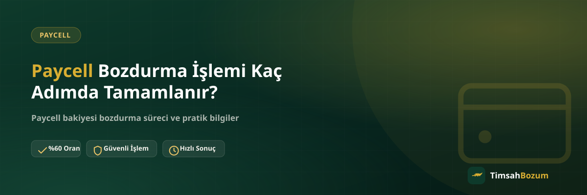

Paycell bakiyesini bozdurmak isteyenlerin en çok sorduğu sorulardan biri, sürecin ne kadar karmaşık olduğu. Gerçekte işlem birbirini takip eden az sayıda adımdan oluşuyor ve hiçbiri üyelik veya form gerektirmiyor. Bu yazıda WhatsApp'tan ilk mesajı yazmaktan ödemeni almana kadar süreci adım adım anlatıyoruz.
Paycell Bozdurma Süreci Genel Olarak Nasıl İşler?
Süreç tek bir kanal üzerinden, resmi WhatsApp hattımızdan yürür. Bakiyeni gösteren bir ekran görüntüsü, oranın teyidi ve ardından ödeme olmak üzere birbirine bağlı birkaç aşamadan geçiyorsun. Her aşama bir öncekinin tamamlanmasına bağlı, yani adımları atlayarak hızlandırmak mümkün değil ama bilgini eksiksiz hazırlarsan toplam süre kısalır.
1. Adım: WhatsApp'tan Yazmak
Süreç, resmi numaramız olan +90 543 887 21 71'e WhatsApp üzerinden yazmanla başlar. Bu ilk mesajda Paycell bakiyeni bozdurmak istediğini belirtmen yeterli; hazırda bir şablon veya özel bir cümle kullanmana gerek yok.
2. Adım: Bakiye Bilgisini Paylaşmak
Bu aşamada güncel Paycell bakiyeni gösteren bir ekran görüntüsü paylaşman gerekir. Cüzdan veya kart ekranından aldığın görüntüde tutarın net ve okunaklı görünmesi, sonraki adıma geçişi hızlandırır. Bakiyenin tamamını bozdurmak zorunda değilsin; Paycell bakiye tabanlı bir hizmet olduğu için kısmi bozum da mümkün.
3. Adım: Oranı Teyit Etmek
Bilgin paylaşıldıktan sonra güncel oran WhatsApp üzerinden sana bildirilir. Oranlar zaman içinde değişebileceği için sitede yayınlanan rakamı genel bir referans olarak düşün, işlem anındaki oranı burada teyit edersin. Bu adımda henüz herhangi bir taahhüt altına girmiyorsun; oranı öğrendikten sonra işlemden vazgeçmekte serbestsin.
4. Adım: Onay Vermek
Teyit edilen oranı kabul ettiğinde işlem onaylanır. Onay, karşılıklı WhatsApp yazışması üzerinden verilir; ek bir form doldurman veya belge yüklemen istenmez. Onaydan sonra artık ödeme aşamasına geçilir.
5. Adım: Ödemeni Almak
Onay sonrası ödeme, WhatsApp üzerinden görüşülen yöntemle yapılır. Bu aşamada hesabına erişim veya şifre paylaşımı istenmez; ödemenin nasıl ve ne şekilde iletileceği yine aynı sohbet üzerinden netleştirilir. Ödeme tamamlandığında işlem kapanmış olur.
Adımlar Sırasında Nelere Dikkat Etmeli?
Her adımın kendi başına uzun sürmesi beklenmez; toplam süreyi uzatan genelde eksik veya bulanık bilgi paylaşımı oluyor. Bakiye ekran görüntüsünü net çekmek, oranı teyit ederken net bir onay vermek ve ödeme yöntemini hızlı netleştirmek sürecin akıcı ilerlemesini sağlar.
Adımlardan Biri Gece Yarısı Denk Gelirse Ne Olur?
TimsahBozum her gün 10:00-03:00 arası aktif. Bu saatler dışında gönderdiğin bir mesaj kaybolmaz, hat açıldığında sırasıyla yanıtlanır. Yani gece gönderdiğin bir ekran görüntüsü ya da onay mesajı, bir sonraki açılışta süreç kaldığı adımdan devam eder.
Adım Atlanırsa veya Bilgi Eksik Paylaşılırsa Ne Olur?
Eksik ya da bulanık bir bakiye görüntüsü paylaşmak işlemi durdurmaz ama bir adım geriye döndürür: bilgiyi tekrar istememiz gerekir. Bu da toplam süreyi uzatan en sık karşılaşılan durumdur. İlk mesajında hangi hizmeti bozduracağını ve tutarı net belirtmen, bu geri dönüşleri önler.
Tüm Adımlar Tek Oturumda mı Tamamlanmalı?
Hayır, adımlar arasında istediğin kadar ara verebilirsin. Oranı teyit ettikten sonra hemen onay vermek zorunda değilsin; düşünüp daha sonra dönebilirsin. Sohbet geçmişi WhatsApp'ta kaldığı için süreç kaldığın yerden devam eder, baştan anlatman gerekmez.
Birden Fazla Bakiye İçin Adımlar Değişir mi?
Hayır, birden fazla Paycell bakiyesi ya da farklı bir hizmetle birlikte bozdurmak istediğinde de aynı beş adım geçerli. Tek fark, 2. adımda tüm bilgileri tek mesajda toplu paylaşmanın süreci daha da hızlandırmasıdır; her tutarı ayrı ayrı bildirmek yerine hepsini bir arada göndermen önerilir.
İlk Kez Bozum Yapanlar İçin Adımlar Değişir mi?
Hayır, ilk kez bozum yapacak biri için de süreç aynı beş adımdan geçer; ek bir kayıt veya tanıma aşaması yoktur. Tek fark, ilk kez yazan birinin genellikle süreci baştan merak etmesi: hangi bilginin ne zaman isteneceğini bilmemek, bazen ilk mesajın eksik bilgiyle gönderilmesine yol açabiliyor. Bu yazıdaki beş adımı önceden bilmek, ilk işlemini yapacak birinin de süreci tek seferde ve sorunsuz tamamlamasını kolaylaştırır.
Adımları Hızlandırmanın Pratik Yolları Var mı?
En büyük hızlandırıcı, 1. ve 2. adımı birleştirip ilk mesajında hem hangi hizmeti bozduracağını hem de bakiye görüntünü aynı anda paylaşmak. Böylece karşı taraf bilgini tek seferde değerlendirip oranı hemen iletebilir, ekstra bir "bakiyeni gönderir misin" turu yaşanmaz. Aynı şekilde 4. adımdaki onayı net bir "evet, devam ediyorum" cümlesiyle vermek, ödeme aşamasına geçişi de hızlandırır.
Adımlardan Biri Takılırsa Baştan mı Başlanır?
Hayır, süreçte bir adımda yaşanan gecikme veya eksik bilgi, önceki adımları geçersiz kılmaz. Örneğin oranı teyit ettikten sonra onay vermeyi geciktirsen, daha önce paylaştığın bakiye bilgisi ve teyit edilen oran sohbette kayıtlı kalır; süreç kaldığı adımdan devam eder, en baştan anlatman gerekmez.
Paycell Bozdurma Süreci Diğer Hizmetlerden Farklı mı?
Beş adımlık bu süreç özünde Pokus veya mobil ödeme bozdurma gibi bakiye tabanlı diğer hizmetlerle aynı mantıkla işler: paylaş, teyit et, onayla, ödemeni al. Fark, 2. adımda hangi bilginin paylaşıldığında ortaya çıkar; Paycell'de cüzdan veya kart ekranından alınan bir bakiye görüntüsü istenirken, Razer Gold gibi kod tabanlı hizmetlerde bunun yerine kodun kendisi paylaşılır ve kısmi bozum söz konusu olmaz. Hangi hizmeti bozduracağını bilmek, 1. adımda doğru bilgiyi hazırlamanı sağlar.
Sürecin nasıl işlediğini öğrendikten sonra bakiyeni hazırlayıp WhatsApp hattımıza yazarak ilk adımı başlatabilirsin. Güncel oranı ve süreci daha ayrıntılı görmek istersen Paycell bozdurma sayfamıza da göz atabilirsin.
İlgili Yazılar
- Paycell Bakiyesi Bozdurmanın Güvenli Yolu
- Paycell Bakiyesi Bozdururken Sık Yapılan Hatalar
- Paycell Bakiyemi Nereden Görebilirim?